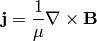
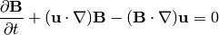
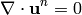

MHD Equations¶
Introduction¶
The magnetohydrodynamics (MHD) equations are:
(1)
(2)
(3)
(4)
assuming is constant. See the next section for a derivation. We can now
apply the following identities (we use the fact that  ):
):
![\left[(\nabla\times{\bf B}) \times {\bf B}\right]_i =
\varepsilon_{ijk}(\nabla\times{\bf B})_j B_k =
\varepsilon_{ijk}\varepsilon_{jlm}(\partial_l B_m)B_k =
(\delta_{kl}\delta_{im}-\delta_{km}\delta_{il})(\partial_l B_m)B_k =
=(\partial_k B_i)B_k - (\partial_i B_k)B_k
=\left[({\bf B}\cdot\nabla){\bf B} -
{1\over2}\nabla|{\bf B}|^2\right]_i
(\nabla\times{\bf B}) \times {\bf B} &=
({\bf B}\cdot\nabla){\bf B} - {1\over2}\nabla|{\bf B}|^2=
({\bf B}\cdot\nabla){\bf B} + {\bf B}(\nabla\cdot{\bf B})
- {1\over2}\nabla|{\bf B}|^2
=\nabla\cdot({\bf B}{\bf B}^T) - {1\over2}\nabla|{\bf B}|^2\\
\nabla\times({\bf v} \times {\bf B}) &=
({\bf B}\cdot\nabla){\bf v} - {\bf B}(\nabla\cdot{\bf v})
+{\bf v}(\nabla\cdot {\bf B}) - ({\bf v}\cdot\nabla) {\bf B}
=
\nabla\cdot({\bf B}{\bf v}^T - {\bf v}{\bf B}^T)\\
\nabla\cdot(\rho{\bf v}{\bf v}^T) &=
\left(\nabla\cdot(\rho{\bf v})\right){\bf v}
+ \rho({\bf v}\cdot\nabla){\bf v}=
-{\bf v}\frac{\partial \rho}{\partial t}
+ \rho({\bf v}\cdot\nabla){\bf v}](../../_images/math/16cce62f3e1051af600aee5e8570ed1b52bd6f60.png)
So the MHD equations can alternatively be written as:
(5)
(6)
(7)
(8)
One can also introduce a new variable , that simplifies (6) a bit.
Derivation¶
The above equations can easily be derived. We have the continuity equation:
Navier-Stokes equations (momentum equation) with the Lorentz force on the right-hand side:
where the current density is given by the Maxwell equation (we neglect the displacement current ):

and the Lorentz force:
from which we eliminate :
and put it into the Maxwell equation:
so we get:
assuming the magnetic diffusivity is constant, we get:
where we used the Maxwell equation:
Finite Element Formulation¶
We solve the following ideal MHD equations (we use , but we drop the star):
(9)
(10)
(11)
(12)
If the equation (12) is satisfied initially, then it is
satisfied all the time, as can be easily proved by applying a divergence to
the Maxwell equation
(or the
equation (10), resp. (3)) and we get
, so
is constant, independent of time. As a consequence,
we are essentially only solving equations (9), (10) and
(11), which consist of 5 equations for 5 unknowns
(components of ,  and ).
and ).
We discretize in time by introducing a small time step and we also linearize the convective terms:
(13)
(14)
(15)
Testing (13) by the test functions , (14) by
the functions and (15) by the test function
 , we obtain the following weak formulation:
, we obtain the following weak formulation:
(16)
(17)
(18)
To better understand the structure of these equations, we write it using bilinear and linear forms, as well as take into account the symmetries of the forms. Then we get a particularly simple structure:

where:
![A(u, v) &= \int_\Omega {u v\over\tau} +
({\bf u}^{n-1}\cdot\nabla)u v\,{\rm d}{\bf x}\\
B(u, v) &= \int_\Omega ({\bf B}^{n-1}\cdot\nabla)uv\,{\rm d}{\bf x}\\
X(u, v) &= \int_\Omega u {\partial v\over\partial x} \,{\rm d}{\bf x}\\
Y(u, v) &= \int_\Omega u {\partial v\over\partial y} \,{\rm d}{\bf x}\\
l_1(v) &= \int_\Omega {u_1^{n-1} v\over\tau} \,{\rm d}{\bf x}\\
l_2(v) &= \int_\Omega {u_2^{n-1} v\over\tau} \,{\rm d}{\bf x}\\
l_4(v) &= \int_\Omega {B_1^{n-1} v\over\tau} \,{\rm d}{\bf x}\\
l_5(v) &= \int_\Omega {B_2^{n-1} v\over\tau} \,{\rm d}{\bf x}](../../_images/math/dd195e0d44b81d421dd6743ba461d4e158a9bf3a.png)
E.g. there are only 4 distinct bilinear forms. Schematically we can visualize the structure by:
| A | -X | -B | ||
| A | -Y | -B | ||
| X | Y | |||
| -B | A | |||
| -B | A |
In order to solve it with Hermes, we first need to write it in the block form:
![$$\begin{array}{lclclclclcl}
a_{11}(u_1, v_1) &+& a_{12}(u_2, v_1) &+& a_{13}(p, v_1) &+&
a_{14}(B_1, v_1) &+& a_{15}(B_2, v_1) &=& l_1(v_1)\\
a_{21}(u_1, v_2) &+& a_{22}(u_2, v_2) &+& a_{23}(p, v_2) &+&
a_{24}(B_1, v_2) &+& a_{25}(B_2, v_2) &=& l_2(v_2)\\
a_{31}(u_1, q) &+& a_{32}(u_2, q) &+& a_{33}(p, q) &+&
a_{34}(B_1, q) &+& a_{35}(B_2, q) &=& l_3(q)\\
a_{41}(u_1, C_1) &+& a_{42}(u_2, C_1) &+& a_{43}(p, C_1) &+&
a_{44}(B_1, C_1) &+& a_{45}(B_2, C_1) &=& l_4(C_1)\\
a_{51}(u_1, C_2) &+& a_{52}(u_2, C_2) &+& a_{53}(p, C_2) &+&
a_{54}(B_1, C_2) &+& a_{55}(B_2, C_2) &=& l_5(C_2)
\end{array}$$](../../_images/math/041457aa48a4b795c24fe930ad277c70ba4a61e3.png)
comparing to the above, we get the following nonzero forms:

where:
and , ...,  are the same as above.
are the same as above.